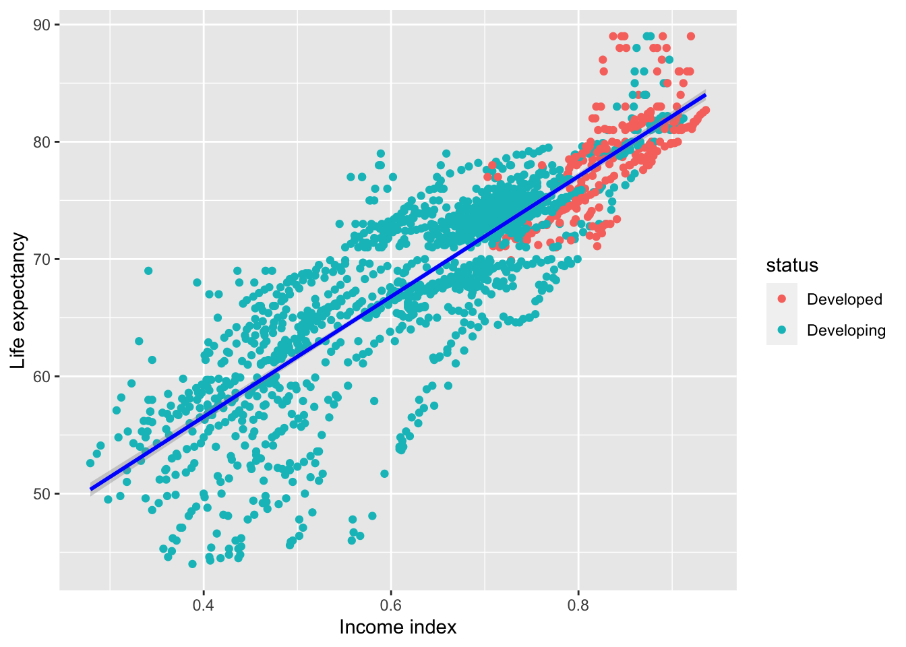
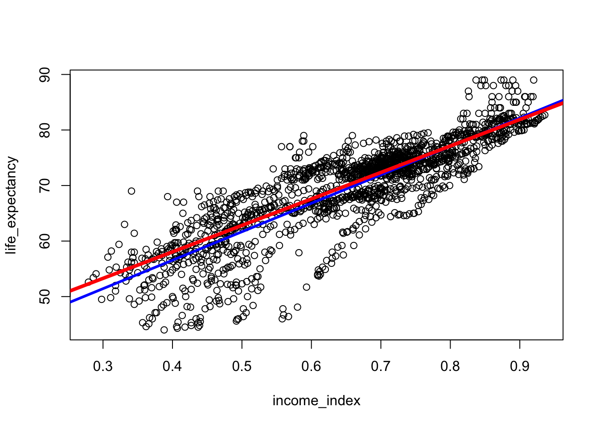
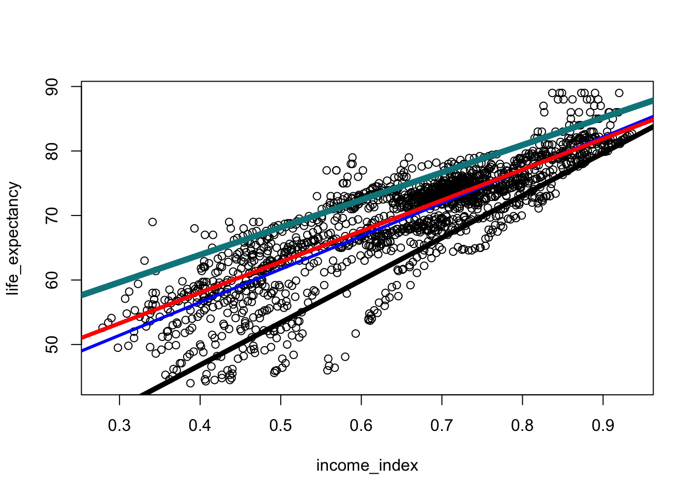
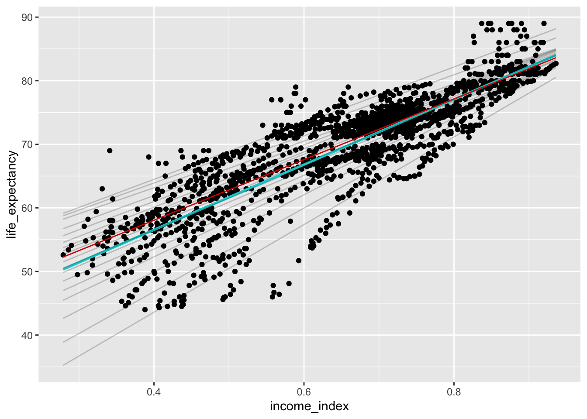
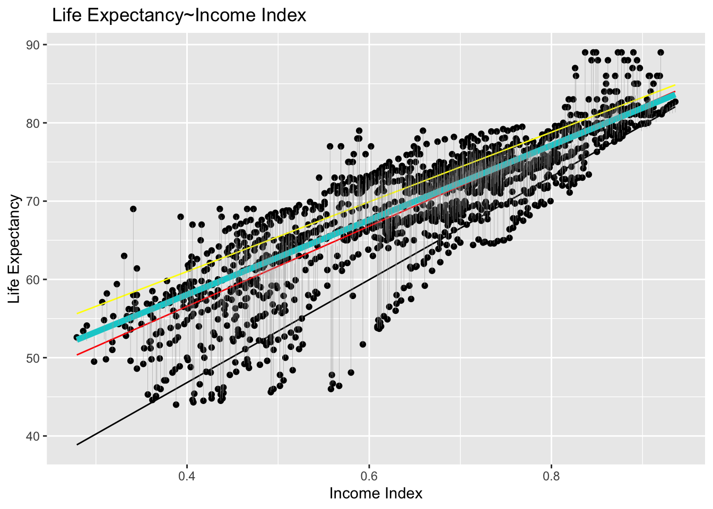
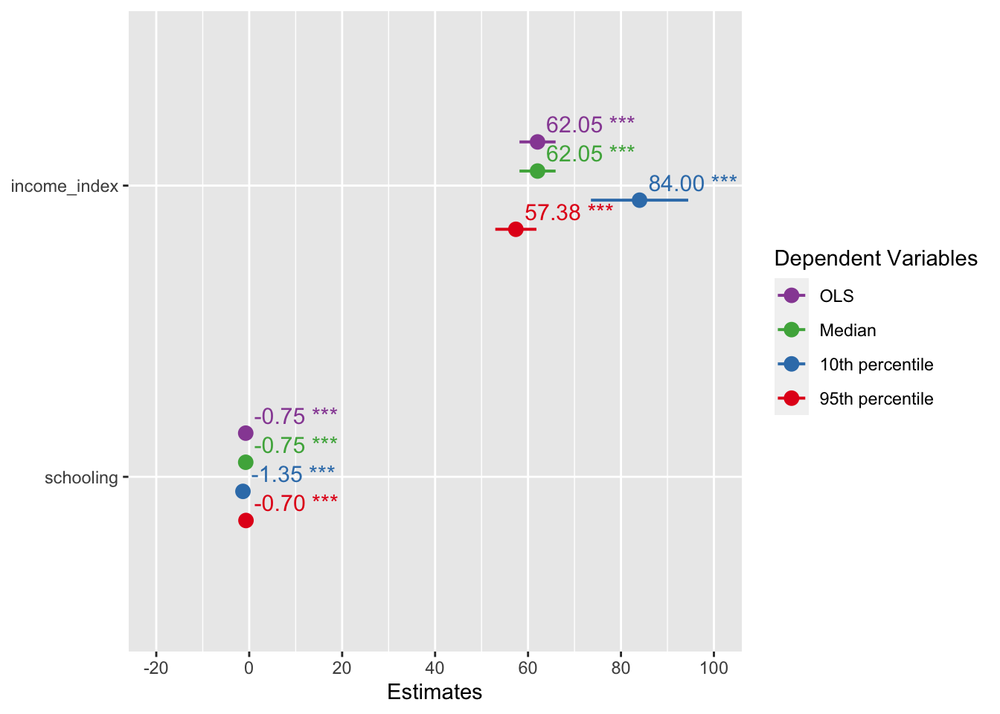
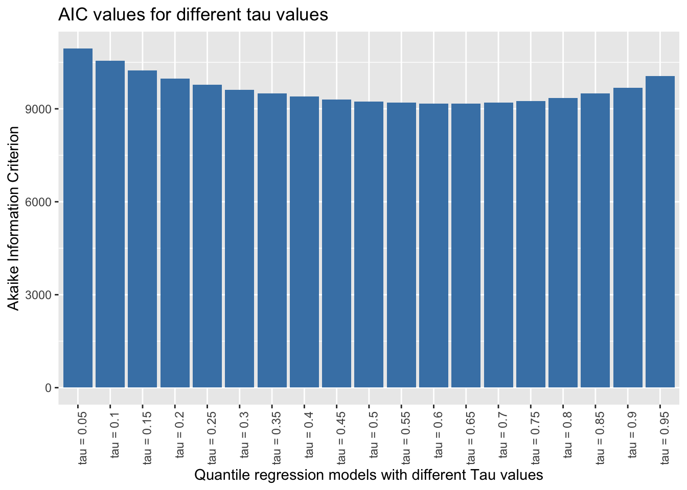
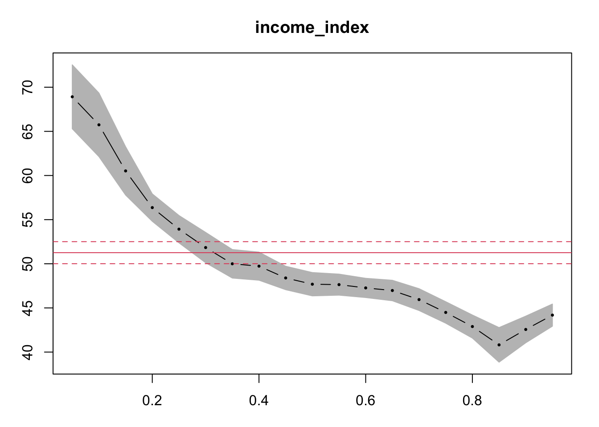

library(pacman)
p_load(dplyr,janitor, ggplot2, quantreg, sjPlot, plotly)Quantile regression tutorial in R
What is quantile regression?
Quantile regression is a statistical technique used to model the relationship between a response variable and one or more predictor variables. Unlike traditional regression models that estimate the mean of the response variable given the predictor variables, quantile regression estimates the conditional quantiles of the response variable.
An equal probability portion of a distribution is represented by a quantile. When the median is the 50th percentile, for instance, 50% of the distribution’s values fall below the median and 50% fall above it. We can estimate any conditional quantile of the response variable in quantile regression, not only the median.
Quantile regression’s primary benefit is that it enables us to model the relationship between the predictor variables across different parts of the distribution of the response variable. This can be useful when the relationship between the predictor variables and the response variable is not constant across the distribution, for example, when the relationship is stronger in the tails of the distribution.
Quantile regression can be a good choice if the data violate some of the key assumptions in ordinary least square regression (OLS): domesticity and normality. It is also robust to outliers or influential data points.
Without spending more time, I will proceed directly to the codes. I need few libraries and I will use the life_expectancy data set. I will use quantreg package to do the models(life expactancy as a function of income) and plotly to visualize the coefficients in 3D.
Read Datasets
life_exp <- read.csv("data/life_expectancy.csv", na.strings = "")
head(life_exp) Country Year Status Life.expectancy Adult.Mortality infant.deaths
1 Afghanistan 2015 Developing 65.0 263 62
2 Afghanistan 2014 Developing 59.9 271 64
3 Afghanistan 2013 Developing 59.9 268 66
4 Afghanistan 2012 Developing 59.5 272 69
5 Afghanistan 2011 Developing 59.2 275 71
6 Afghanistan 2010 Developing 58.8 279 74
Alcohol percentage.expenditure Hepatitis.B Measles BMI under.five.deaths
1 0.01 71.279624 65 1154 19.1 83
2 0.01 73.523582 62 492 18.6 86
3 0.01 73.219243 64 430 18.1 89
4 0.01 78.184215 67 2787 17.6 93
5 0.01 7.097109 68 3013 17.2 97
6 0.01 79.679367 66 1989 16.7 102
Polio Total.expenditure Diphtheria HIV.AIDS GDP Population
1 6 8.16 65 0.1 584.25921 33736494
2 58 8.18 62 0.1 612.69651 327582
3 62 8.13 64 0.1 631.74498 31731688
4 67 8.52 67 0.1 669.95900 3696958
5 68 7.87 68 0.1 63.53723 2978599
6 66 9.20 66 0.1 553.32894 2883167
thinness..1.19.years thinness.5.9.years Income.composition.of.resources
1 17.2 17.3 0.479
2 17.5 17.5 0.476
3 17.7 17.7 0.470
4 17.9 18.0 0.463
5 18.2 18.2 0.454
6 18.4 18.4 0.448
Schooling
1 10.1
2 10.0
3 9.9
4 9.8
5 9.5
6 9.2I will now do some data cleaning. The variable names are a bit tedious and to avoid using the backticks. I will simply clean up the column names using the janitor packages very useful clean_names() function
life_expe_data <- clean_names(life_exp)
names(life_expe_data) [1] "country" "year"
[3] "status" "life_expectancy"
[5] "adult_mortality" "infant_deaths"
[7] "alcohol" "percentage_expenditure"
[9] "hepatitis_b" "measles"
[11] "bmi" "under_five_deaths"
[13] "polio" "total_expenditure"
[15] "diphtheria" "hiv_aids"
[17] "gdp" "population"
[19] "thinness_1_19_years" "thinness_5_9_years"
[21] "income_composition_of_resources" "schooling" Now the variable names are clean, we can do the rest of the coding as follows. I now remove the missing values. You can do better for your data by using imputation techniques to deal with missing values. But that is not my goal here today. Perhaps, I may do a blog or a YouTube video in the future. I just need you to demand for it or encourage me to do it.
life_exp_narm <- life_expe_data[complete.cases(life_expe_data),]
dim(life_exp_narm)[1] 1649 22#let's remove all with income index around 0.
life_exp_narm <- life_exp_narm |>
filter(income_composition_of_resources > 0) We have about 22 variables and 1649 observations. Not bad for modelling! Since,income_composition_of_resources is a really long and boring variable name, I am changing it.
names(life_exp_narm)[names(life_exp_narm) == "income_composition_of_resources"] <- "income_index"
summary(life_exp_narm$income_index) Min. 1st Qu. Median Mean 3rd Qu. Max.
0.2790 0.5290 0.6770 0.6505 0.7540 0.9360 sd(life_exp_narm$income_index)[1] 0.1490056summary(life_exp_narm$life_expectancy) Min. 1st Qu. Median Mean 3rd Qu. Max.
44.00 64.60 71.80 69.39 75.00 89.00 sd(life_exp_narm$life_expectancy)[1] 8.876531You can see that our main predictor variable has a mean 0.65 and SD of 0.149. It maybe a good idea to take a look at it by visualizing it. And the mean life expectancy was 69.4(SD=8.88)
ggplot(life_exp_narm) +
aes(x = income_index, y = life_expectancy, col = status) +
geom_point() + geom_smooth(method = "lm", col="blue") +
xlab("Income index") + ylab("Life expectancy")`geom_smooth()` using formula = 'y ~ x'
Qauntile regression
Before doing the quantile regression. It might be a good idea to take a look at the visualization by setting different tau values in abline of the base r plot showing the relationship between life_expectancy and income_index. The OLS regression is do the regression from the mean while the quantil regression n quantile regression, we can estimate any conditional quantile of the response variable, not just the mean but could be the medeian (50%), 90%, 75% or anywhere until 99%.If this is not clear, I highly recommended watching the video I dropped earlier. Let’s now visualize the mean and the median ablines
plot(life_expectancy ~ income_index, data = life_exp_narm)
abline(lm(life_expectancy ~ income_index, data = life_exp_narm), col="blue", lwd = 3)
abline(rq(life_expectancy ~ income_index, tau=0.5, data = life_exp_narm), col="red", lwd = 4) # Notcie the tau=0.5,
You can see the plot blue line is the OLS regression line but the red line is if we model the regression using the median. If you have to run only two models and choose the model that best fits the data, you have to choose by AIC or using loss function(eg. the model with minimum mean squared error or mean absolute error, etc will be the best fit). NB: choosing the right model is not my goal here.
Now let’s add 10th and 90th percentiles from the above vizualization and evaluate which line looks better fit for the relationship between the two variables.
plot(life_expectancy ~ income_index, data = life_exp_narm)
abline(lm(life_expectancy ~ income_index, data = life_exp_narm), col="blue", lwd = 3)
abline(rq(life_expectancy ~ income_index, tau=0.5, data = life_exp_narm), col="red", lwd = 4)
abline(rq(life_expectancy ~ income_index, tau=0.1, data = life_exp_narm), col="black", lwd = 5)
abline(rq(life_expectancy ~ income_index, tau=0.90, data = life_exp_narm), col="turquoise4", lwd = 6)
We can actually visualize multiple quantreg models and see it compared to the OLS model.
ggplot(life_exp_narm, aes(income_index, life_expectancy))+
geom_point() + # scatter plot
geom_smooth(method = lm, se = F, color = "darkturquoise") + # linear model
geom_quantile(color = "red", quantiles = 0.5) + # Quantreg based on median
geom_quantile(color = "black", alpha = 0.2,
quantiles = seq(.05, .95, by = 0.05)) #multiple models from the 5th percentile to 95th percentile`geom_smooth()` using formula = 'y ~ x'
Smoothing formula not specified. Using: y ~ x
Smoothing formula not specified. Using: y ~ x
Let’s now run four different models at the mean(OLS), and quantile regressions at the median, 10th percentile and 95th percentiles. Notice the tau values. I also added one more variable.
ols <- rq(life_expectancy~income_index+schooling, data = life_exp_narm) #Similar to lm()
quant_reg_med <- rq(life_expectancy~income_index+schooling,tau = 0.5, data = life_exp_narm)
quant_reg_first <- rq(life_expectancy~income_index+schooling,tau = 0.1, data = life_exp_narm)
quant_reg_last <- rq(life_expectancy~income_index+schooling,tau = 0.95, data = life_exp_narm)
summary(ols)
Call: rq(formula = life_expectancy ~ income_index + schooling, data = life_exp_narm)
tau: [1] 0.5
Coefficients:
Value Std. Error t value Pr(>|t|)
(Intercept) 38.59204 0.56239 68.62125 0.00000
income_index 62.04691 1.98135 31.31544 0.00000
schooling -0.75195 0.10388 -7.23903 0.00000summary(quant_reg_med)
Call: rq(formula = life_expectancy ~ income_index + schooling, tau = 0.5,
data = life_exp_narm)
tau: [1] 0.5
Coefficients:
Value Std. Error t value Pr(>|t|)
(Intercept) 38.59204 0.56239 68.62125 0.00000
income_index 62.04691 1.98135 31.31544 0.00000
schooling -0.75195 0.10388 -7.23903 0.00000summary(quant_reg_first)
Call: rq(formula = life_expectancy ~ income_index + schooling, tau = 0.1,
data = life_exp_narm)
tau: [1] 0.1
Coefficients:
Value Std. Error t value Pr(>|t|)
(Intercept) 25.92063 1.81747 14.26195 0.00000
income_index 84.00142 5.34145 15.72633 0.00000
schooling -1.34938 0.22578 -5.97661 0.00000summary(quant_reg_last)Warning in summary.rq(quant_reg_last): 113 non-positive fis
Call: rq(formula = life_expectancy ~ income_index + schooling, tau = 0.95,
data = life_exp_narm)
tau: [1] 0.95
Coefficients:
Value Std. Error t value Pr(>|t|)
(Intercept) 46.56308 0.40214 115.78932 0.00000
income_index 57.37912 2.25777 25.41402 0.00000
schooling -0.69824 0.10643 -6.56032 0.00000Let’s have a closer look of the median model relative to the lm.
# Plot data points and regression models
ggplot(life_exp_narm, aes(income_index, life_expectancy)) +
geom_point() +
geom_smooth(method = lm, se = FALSE, color = "red", size = 0.5) + # linear model
geom_quantile(color = "darkturquoise", quantiles = 0.5, size=2) + # median quantile regression model with tau = 0.5
geom_quantile(color = "black", quantiles = 0.1, size=0.5) + #quantreg based on the 10th percentile
geom_quantile(color = "yellow", quantiles = 0.75, size= 0.5) + #quantreg based on the 10th percentile
geom_segment(aes(x = income_index, y = life_expectancy, xend = income_index, yend = predict(quant_reg_med, newdata = life_exp_narm)),
color = "darkgray", size = 0.1) + # distance line based on median quantile regression model
labs(title = " Life Expectancy~Income Index", y = "Life Expectancy", x = "Income Index")Warning: Using `size` aesthetic for lines was deprecated in ggplot2 3.4.0.
ℹ Please use `linewidth` instead.`geom_smooth()` using formula = 'y ~ x'
Smoothing formula not specified. Using: y ~ x
Smoothing formula not specified. Using: y ~ x
Smoothing formula not specified. Using: y ~ x
We can plot the coefficients of the four different models we modeled earlier and compare them.
plot_models(ols, quant_reg_med, quant_reg_first, quant_reg_last,
show.values = TRUE,
m.labels = c("OLS", "Median", "10th percentile",
"95th percentile",
legend.title = "Model")
)Warning in summary.rq(x): 113 non-positive fis
You can see the OLS(based one mean) and quanitile regression based on the median are identical.But the one with 10th percentile and 95th percentile are different from the coefficients of the OLS.
For effectively modeling numerous quantreg models, you may do somthing like the following.
taus<-seq(from = .05, to = .95, by = 0.05) #Taus ranging from 0.05 to 0.95 with a step value of 0.05
quant_all <- rq(life_expectancy~income_index,tau = taus,
data = life_exp_narm)
names(quant_all) #To access the cntents of our model [1] "coefficients" "x" "y" "residuals"
[5] "dual" "fitted.values" "formula" "terms"
[9] "xlevels" "call" "tau" "rho"
[13] "method" "model" quant_all$tau #To see the taus [1] 0.05 0.10 0.15 0.20 0.25 0.30 0.35 0.40 0.45 0.50 0.55 0.60 0.65 0.70 0.75
[16] 0.80 0.85 0.90 0.95With that we have got several models. But how we access a specific model for example when tau=0.8 or tau=0.1?
summary(quant_all)[which(taus == 0.8)][[1]]
Call: rq(formula = life_expectancy ~ income_index, tau = taus, data = life_exp_narm)
tau: [1] 0.8
Coefficients:
Value Std. Error t value Pr(>|t|)
(Intercept) 44.77157 0.62620 71.49715 0.00000
income_index 42.89216 0.79348 54.05567 0.00000summary(quant_all)[which(taus == 0.1)][[1]]
Call: rq(formula = life_expectancy ~ income_index, tau = taus, data = life_exp_narm)
tau: [1] 0.1
Coefficients:
Value Std. Error t value Pr(>|t|)
(Intercept) 20.52315 1.70906 12.00844 0.00000
income_index 65.74074 2.18924 30.02897 0.00000If we want to compare the AIC values of these models, as usual we can use AIC()
aic_df <- data.frame(AIC = AIC(quant_all), model = paste("tau =",taus))
head(aic_df) AIC model
1 10945.777 tau = 0.05
2 10550.411 tau = 0.1
3 10230.887 tau = 0.15
4 9978.270 tau = 0.2
5 9771.004 tau = 0.25
6 9618.262 tau = 0.3ggplot(aic_df, aes(x = model, y = AIC)) +
geom_bar(stat = "identity", fill = "steelblue") +
labs(title = "AIC values for different tau values",
x = "Quantile regression models with different Tau values",
y = "Akaike Information Criterion") +
theme(axis.text.x = element_text(angle = 90, hjust = 1))
It seems the model around the median point is better fit. In general, we ought to pick the model with the lowest AIC score. AIC (Akaike Information Criterion) is a metric used to assess a statistical model’s suitability for a particular set of data. It is based on the model’s complexity as well as its goodness of fit. The model is thought to be better the lower the AIC value.
However, it’s crucial to remember that the AIC should not be the only factor considered when choosing a model. When choosing a model, it is important to take into account a number of additional elements, including interpretability, applicability, and theoretical relevance. It’s also possible that none of the models have an AIC that is noticeably superior to the others, in which case other factors might be more crucial in selecting a model.
How about if we want to access the coefficients?
QR.coef <- coef(quant_all)Or in a more complicated way like the following
lprq <- function(x, y, h, m=19 , tau=.5)
{
xx <- seq(min(x),max(x),length=m)
fv <- xx
dv <- xx
for(i in 1:length(xx)) {
z <- x - xx[i]
wx <- dnorm(z/h)
r <- rq(y~z, weights=wx, tau=tau, ci=FALSE)
fv[i] <- r$coef[1.]
dv[i] <- r$coef[2.]
}
data.frame(dv = dv)
}
#Create a matrix to save the QQR estimates
taus<-seq(from = .05, to = .95, by = 0.05)
QQR.coef <- as.data.frame(matrix(0, ncol = 19, nrow = 19))
# Run QQR in a loop and save estimates in matrix "QQR.coef"
#Note: 0.05 in below loop is the bandwidth that can be adjusted
o <-life_exp_narm$life_expectancy
p <-life_exp_narm$income_index
for (i in 1:19){
x<-lprq(o, p,0.05,tau=taus[i])
QQR.coef[,i]<-x
}Let’s now save all coefficients in a matrix
beta <- as.matrix(QQR.coef)Vizualize
p <- plot_ly( z = ~beta, x = ~taus, y = ~taus, opacity = 0.6) %>%
add_markers()
p %>% add_surface(z = ~beta, x = ~taus, y = ~taus, showscale = FALSE) %>%
layout(showlegend = FALSE)Quantile process plot
summary(quant_all) |> plot("income_index") #Let's ignore the intercept
The summary(quant_all) |> plot(“income_index”) command generates a Quantile Process Plot for the variable income_index. A quantile process plot is a graphical tool to assess the relationship between the response variable (in our case, life_expectancy) and the predictor variable (income_index) across different quantiles of the response distribution. The x-axis represents the predictor variable, and the y-axis represents the quantiles of the response variable. The plot shows a line for each quantile of interest (0.05, 0.1, 0.15, …, 0.95), indicating the estimated relationship between income_index and the corresponding quantile of life_expectancy. The shaded area is for quantile regression and its confidence intervals.The slope of each line represents the estimated effect of income_index on the given quantile of life_expectancy. The solid and dashed red lines show the linear model and its lower and upper bound confidence intervals, respectively. In the plot, we can see only a very small region(from around 0.25 to 0.4) overlaps with the linear model. The large portion of the plot when the income index is larger than 0.4 or when it is lower than 0.2 is not overlapping indicating the difference between the quantreg approach and the OLS modeling approach.
In addition, we can see curvatures or non-linearity in the lines, which may indicate that the relationship between the variables is more complex than a simple linear one. Hence, a more complex model may be necessary to capture the full range of the relationship between the two variables.
That is all for today. Again I highly recommend watching the video and reading quantreg package functions. I hope you like it. See you in the next post.